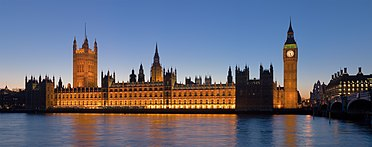
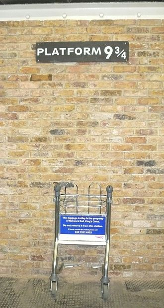

Mi ciudad favorita
La capital inglesa es una de mis ciudades favoritas. Se han grabado en ella cientos de películas como Harry Potter, tienes cientos de planes originiales para hacer y lugares para visitar.
No te lo vas a creer
Lo que más me gusta de Londres es que a pesar de que es una de las ciudades más visitadas y famosas del mundo, siempre que he ido aprendí un montón de cosas nuevas sobre ella. Aquí os dejo alguno de los datos más interesantes que aprendí:
- El Big Ben es en realidad el nombre del campanario y no del reloj que se encuentra en su interior.
- El famoso Tower Bridge de Londres no es el puente más antiguo de la ciudad, es el London Bridge.
- El famoso museo de cera de Madame Tussauds originalmente comenzó como un espectáculo itinerante de modelos de cera en el siglo XVIII.
- El metro de Londres es el más antiguo del mundo, se inauguró en 1863 y hoy en día cuenta con más de 270 estaciones.
- La Torre de Londres ha sido utilizada como palacio real, fortaleza y prisión a lo largo de su historia. Actualmente alberga las Joyas de la Corona.
- El famoso reloj de la estación de tren de Paddington es conocido como "el reloj de la muerte" ya que indica la hora exacta en la que partieron los trenes hacia los campos de concentración durante la Segunda Guerra Mundial.
- La Abadía de Westminster es el lugar de coronación de los monarcas británicos desde Guillermo el Conquistador en 1066 hasta el reciente coronado Carlos III.
Para los fanáticos de Harry Potter
El andén 9 y 3/4 desde donde los estudiantes de Hogwarts toman el tren a la escuela se encuentra en la estación King's Cross de Londres. Puedes tomar una foto empujando un carrito a través de la pared en la estación, como si estuvieras entrando al andén mágico.
Cerca de la estación Leicester Square, hay un lugar llamado "Cecil Court" que se dice que inspiró el Callejón Diagon en la serie de Harry Potter. Esta calle empedrada tiene una gran cantidad de tiendas antiguas y librerías de segunda mano.
En la película de Harry Potter y el Prisionero de Azkaban, se puede ver la Catedral de San Pablo de Londres en una escena en la que Harry y sus amigos vuelan sobre la ciudad en escobas. La catedral es un hermoso lugar para visitar en Londres y tiene una impresionante cúpula de cristal.